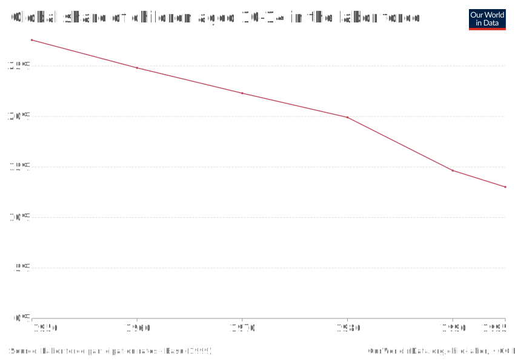

In 2020 alone, around 160 million children and adolescents were victims of child labor on the planet. That is, 1 in 10 people of these ages suffered from the practice. Currently, the participation rate for boys is higher than for girls at all ages, with a difference of 34 million. Fortunately, the general rate has declined a lot over the years.
Today almost half of these people carry out dangerous forms of work, with safety at risk. The practice is very common in rural areas, where there is not much supervision.
fontes: https://www.ilo.org/brasilia/temas/trabalho-infantil/lang--pt/index.htm